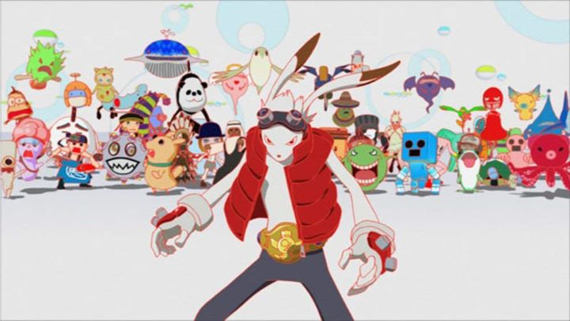

If you were born between 1985 and 1995, there's a strong chance the plot of 2009's "Summer Wars" will sound REALLY familiar. It should sound like a direct rip-off to "Digimon: The Movie," a children's movie based on the hit TV show, released in theaters in the year 2000. Admittedly, "Digimon: The Movie" was pretty terrible, being edited by Fox Kids in America to combine existing Digimon films from Japan, cutting most of their story and dialogue and being spliced with pop-songs to fit as a full theatrical experience. Despite that, I loved it as a child and still have fond memories of it today. Anyway, "Summer Wars" was in a unique position, as its director, Mamoru Hosoda, happens to be the very same director behind the "Digimon" film story it borrows from. Can a director copy himself? Regardless of the implications, I would easily recommend "Summer Wars" over "Digimon" for simply being a stand-alone work, not including that it is generally a better film.If there is any part of "Summer Wars" that demands critical responses, it would be in its overwhelming plot, filling up the nearly two-hour runtime. It starts innocently enough: Kenji and his friend are both nerds spending their summer working for the OZ computer system, a massive online world that represents a visual interpretation of the Internet. Everyone has an account, where they can customize their avatar, walk around virtual stores, conduct business, and play games or compete in online fighting matches. Kenji's plans change when Natsuki, a beautiful but unassuming student at their school, barges in and asks him to spend the week with her at her family reuinion. Not wanting to turn her down, Kenji agrees, assuming he would simply be assisting her travel and helping during her large family's reuinion. Imagine his surprise when Natsuik introduces him as her fiancee! It turns out Natsuki's grandmother's health is failing, and Natsuki was hoping the news would ease her and cheer her up, with the intention to drop the idea by the end of the summer when her grandmother feels better. But Natsuki's grandmother is a strong woman and holds up fine, leaving Kenji and Natsuki to awkwardly dance around the subject around Natsuki's family over a couple dozen members, while possibly growing to the idea of love after all.But wait, there's more! Kenji receives a mathematics question through email one night, and being a gifted student, he takes the challenge and works out the answer. It turns out the email was a guise to hack into OZ, and the next day the entire system is under attack by an advance AI, which happens to have been designed by Natsuki's estranged uncle. It isn't just a matter of computers not connecting online: billing systems are down, traffic lights are malfunctioning, GPS systems don't work, and health systems are putting lives in danger. At one point, the AI threatens to hack and launch a government missle directly at Natsuki's family home. Kenji has to act to clear his name and undo his mistake, using his avatar with the help of Natsuki's family to stop the AI. This whole part matches the "Digimon" story beat for beat.Not only is the story a lot to cram into a single film, it also borders on being a little silly. The climax revolves around a high-stakes card game called "Koi-Koi" that makes no sense to an English audience, complete with cheers and screaming that would make "Yu-Gi-Oh!" seem passive. Soon after, Kenji has to hack the system again in real-time to a countdown timer, in one of the most exciting (but non-specific) scenes involving math that I've ever seen. I can't say anyone would ever feel bored, although so much goes on with so many characters that a young child might loose interest pretty quickly. The story is saved in part by director Hosoda's skill in portraying family dynamics and relationships. Despite all that goes on, the script still finds time to breathe and show the different mothers, fathers, uncles, aunts and children interact with each other. Even with such a large cast of characters, most of them have distinct personalities and feel genuine, many of whom have small but important parts to play in the overall story. It's a fine line to dance, but I would say the story holds up well rather than falling on its face, and the technological aspect makes it feel more modern and relavent then most other films. Hosoda's flat and shadeless character designs are still in full force here, but the sheer variety of the cast and the detail of their homes are impressive. Moreso is OZ itself, a bright and colourful world filled with every manner of cartoon animal you can imagine. It's a fantastic vision of the Internet of the future, and will test your television's power in displaying bright white and switching to more muted and realistic garden palettes of a home in the country. It's the visual design of OZ, the sharp character writing, fun plot, and acting cast's ability to keep up with it all that shines the most in the production. While I don't think "Summer Wars" is comparable to Hosoda's best work, it certainly is the most fun, and easiest to recommend blind to anyone, be it boy or girl, young or old. And students wanting to learn how to write a story with a large cast should refer to this in their studies. It's a pretty fantastic film in that sense, and has something for everyone to enjoy.
- "Ani" More reviews can be found at : https://2danicritic.github.io/ Previous review: review_Street_Fighter_II_-_The_Animated_Movie Next review: review_Supernatural_-_The_Animation